The Emerald Coffee crece a 1.800 msnm en las montañas de Samaniego, Nariño. Un café 100% arábico de especialidad, lavado y cultivado a mano por familias caficultoras de la región.


Origen
Nuestro café se cultiva en las veredas altas de Samaniego, Nariño, a 1.800 metros sobre el nivel del mar, donde la niebla cubre el cafetal casi todas las mañanas y las temperaturas frías obligan a la planta a madurar con calma. Esa lentitud es precisamente lo que buscamos: cada cereza tiene más tiempo para desarrollar azúcares naturales, y eso se traduce en una taza con notas dulces y florales —jazmín, azahar— y un cuerpo sedoso que distingue a cada lote que sale de estas montañas.
Detrás de cada bolsa hay una relación directa con las familias caficultoras de la zona: acordamos precios justos, hacemos seguimiento lote por lote y evitamos los intermediarios que suelen quedarse con la mayor parte del valor. Ese trabajo cercano nos permite escoger un tueste medio pensado para resaltar el perfil achocolatado y de especias dulces propio de este origen, sin apagar la acidez brillante que lo hace único.
01
Todo nace en el almácigo: seleccionamos con cuidado la semilla de las plantas que mejor se comportaron en la cosecha anterior, buscando vigor, sanidad y buen tamaño de grano. Esa semilla se siembra en bolsas bajo sombra, donde permanece protegida del sol directo y del viento durante varios meses, mientras desarrolla una raíz fuerte que le dará soporte el resto de su vida productiva. Es un paso lento, casi invisible, pero del que depende la calidad de todo lo que viene después.
02
Cuando el almácigo alcanza el tamaño y la fortaleza adecuados, cada planta se traslada desde el vivero hasta el lote definitivo, donde pasará el resto de su vida productiva. En este momento cuidamos con precisión la distancia entre surcos, para que cada planta tenga suficiente luz y espacio para sus raíces, y mantenemos árboles nativos de sombra que regulan la temperatura del cafetal y protegen la biodiversidad de la zona.
03
Bajo la niebla constante de las veredas altas, la planta gana altura muy despacio, formando ramas y hojas nuevas mes tras mes. Pasado un tiempo, y casi siempre después de las primeras lluvias, llega la floración: el cafetal se cubre de pequeñas flores blancas de aroma dulce e intenso, parecido al jazmín, que anuncian que la cosecha está cerca. Es uno de los momentos más bonitos del año en la finca, aunque dura apenas unos pocos días.
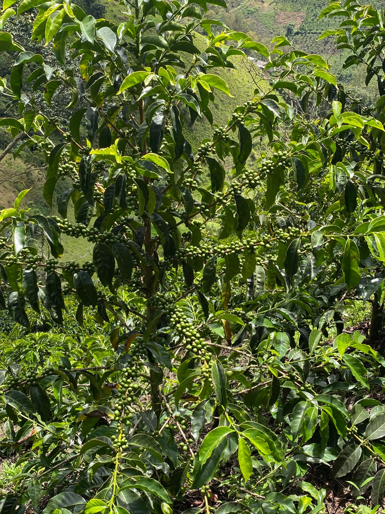
04Después de la floración empiezan a formarse las cerezas de café, muy pequeñas y de color verde intenso al principio. Durante varias semanas van cambiando de tono —del verde al amarillo y finalmente al rojo profundo— mientras acumulan azúcares y desarrollan el sabor que después vamos a encontrar en la taza. Es un proceso que no se puede apresurar: cada cereza madura a su propio ritmo dentro de la misma rama.
05
La recolección es 100% manual y selectiva: los recolectores pasan varias veces por el mismo lote a lo largo de la temporada, tomando únicamente las cerezas que ya alcanzaron su punto óptimo de maduración y dejando el resto para más adelante. Es un método más lento y exigente que la cosecha mecánica, pero es justamente lo que nos permite garantizar la calidad y la uniformidad de cada lote que empacamos.
06
El mismo día de la cosecha, para evitar que la fruta se sobremadure, el café pasa por la despulpadora, una máquina que retira la cáscara exterior de la cereza. Al terminar este paso el grano queda cubierto por una capa de mucílago —una especie de gel dulce y pegajoso— y listo para definir el camino que va a seguir según el proceso de beneficio que elijamos para ese lote.
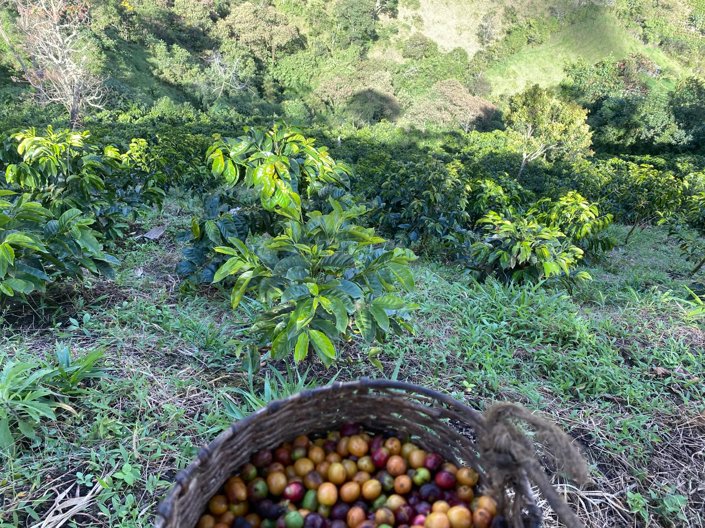
07Aquí se define buena parte del perfil de taza. En el lavado limpio, el grano fermenta y luego se retira todo el mucílago en tanques con agua, dejando una taza más ligera y de acidez brillante. En el semilavado, se deja parte del mucílago antes de secar el grano, ganando más dulzor y cuerpo. Y en el proceso natural o sin lavar, el grano se seca prácticamente con toda la cereza intacta, lo que produce una taza más frutal, densa y compleja. No todos los lotes son iguales: elegimos el proceso según el potencial de cada cosecha.
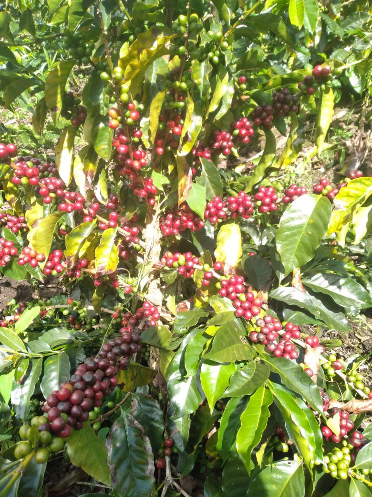
08El café se seca de forma lenta y natural, extendido en capas delgadas sobre camas o patios de secado, y se remueve varias veces al día para que la humedad baje de manera uniforme en todo el lote. Este paso puede tomar entre una y tres semanas, dependiendo del clima, hasta alcanzar el punto de humedad ideal que garantiza un buen almacenamiento y evita defectos en la taza final.
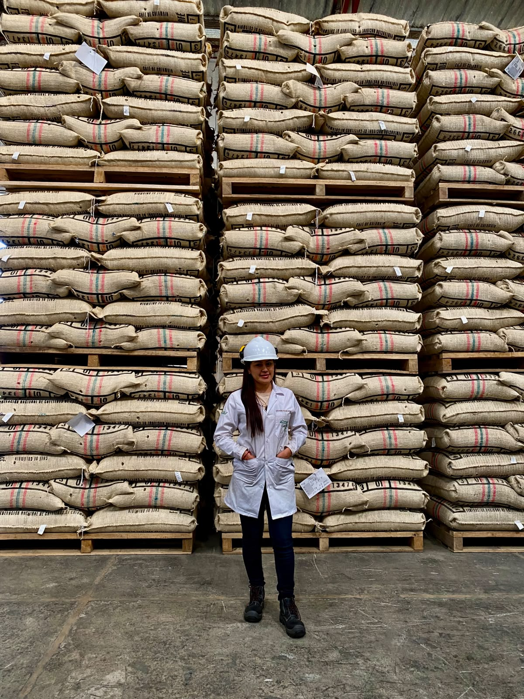
09Con el grano ya seco y en su punto, el café queda en pergamino, listo para almacenarse, comercializarse o seguir su camino hacia la trilla —donde se retira esa cáscara final—, la selección manual de defectos y el tueste, antes de llegar finalmente a tu taza.
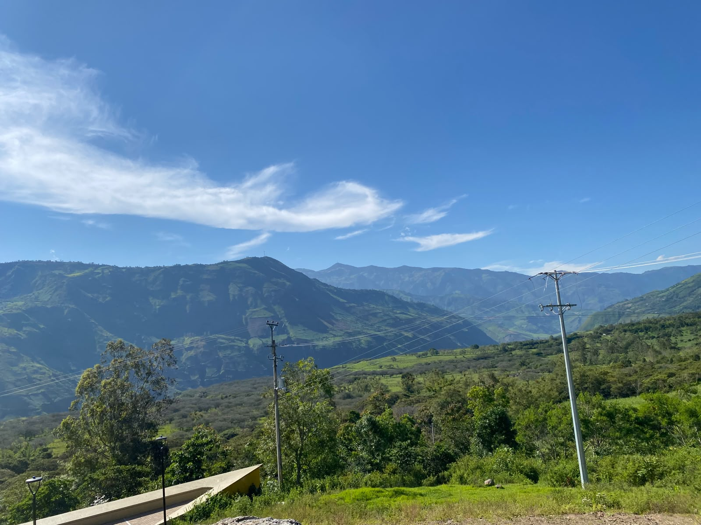
Quiénes somos
Cultivar y ofrecer café de especialidad de origen colombiano, trabajando de la mano con las familias caficultoras de Samaniego bajo un modelo de comercio directo y justo, para que cada bolsa que sale de estas montañas lleve a la taza el esfuerzo real detrás del grano.
Consolidarnos como una marca de café de especialidad reconocida en Colombia, ampliando nuestra presencia en cafeterías, tostadores y negocios del país, sin perder nunca la cercanía y la transparencia con el caficultor que le dio origen a este proyecto.
Compromiso
100% café arábico de especialidad
Sostenible y responsable con la tierra
Comercio directo con el caficultor
Cuidamos nuestro planeta
Apoyamos comunidades locales
La ficha del grano
Pasa el cursor — o toca en móvil — sobre cada casilla para ver el detalle completo, tal como aparece en la contraetiqueta del empaque.
Samaniego, Nariño, Colombia. Cultivo en ladera, clima frío de montaña.
1.800 metros sobre el nivel del mar — maduración lenta, más azúcares naturales.
Arábica de especialidad, fragancia con notas dulces y frutales — jazmín y azahar.
Beneficio húmedo tradicional. Cuerpo sedoso y taza limpia.
Perfil achocolatado y de especias dulces. Tueste medio, ideal espresso, filtrado o prensa francesa.
El café
Empaque hermético con válvula, etiqueta con código QR de trazabilidad y ficha técnica impresa — la misma que reproducimos arriba en la web.


Pide tu café
Compra directa, sin carrito ni intermediarios: eliges el gramaje y confirmamos disponibilidad, precio y envío por chat.
Más pedido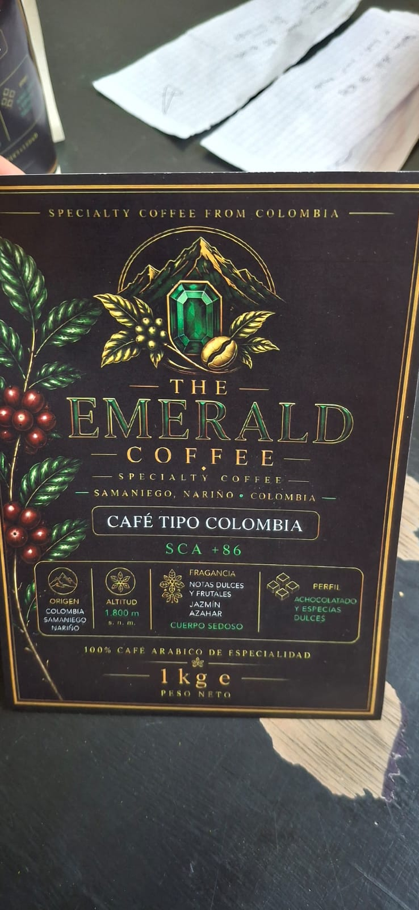
También por volumen
Si eres caficultor, trillador, tostador o distribuidor, también despachamos el grano en el punto que necesites para tu proceso.
No todos los lotes son iguales
Aunque el origen y la variedad son los mismos, cada lote de The Emerald Coffee puede pasar por un proceso distinto en la finca, y eso se nota directamente en la taza. Al pedir, puedes preguntarnos qué proceso tiene disponible el lote actual.
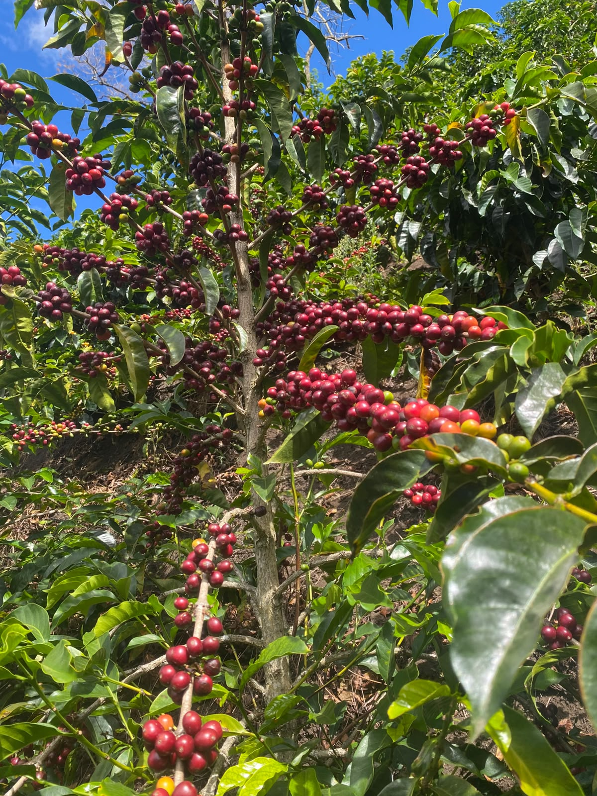
La finca
Así se ve el terreno donde crece cada lote: montaña, niebla y el trabajo real de la familia caficultora, sin poses de estudio.
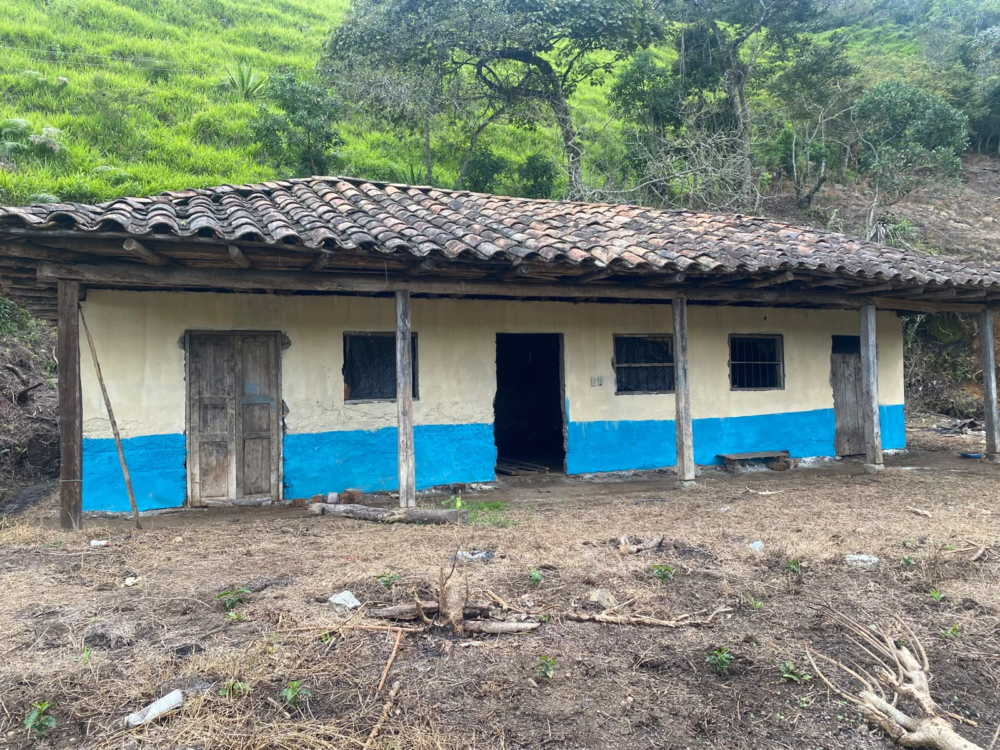
La casa de la finca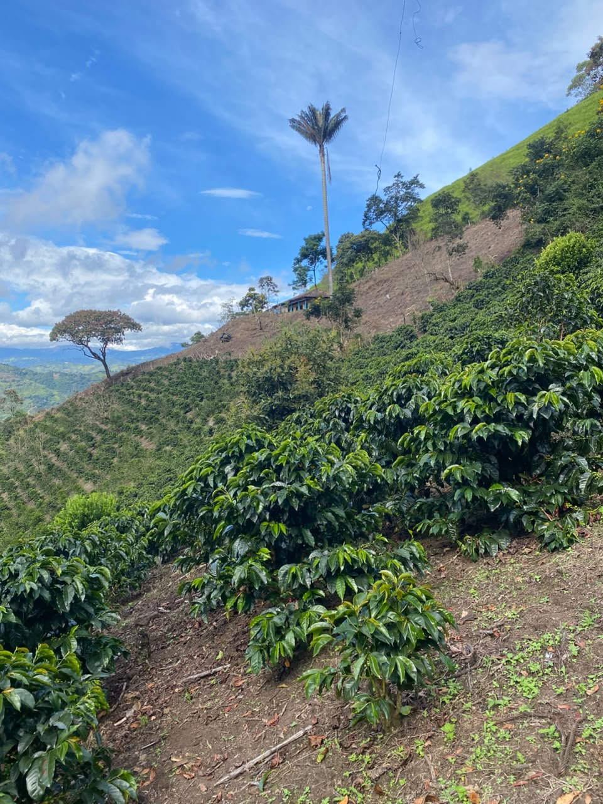
Ladera con palma de ceraGalería
Del almácigo al empaque: un vistazo al trabajo diario detrás de cada lote de The Emerald Coffee. Toca cualquier foto para verla en grande.
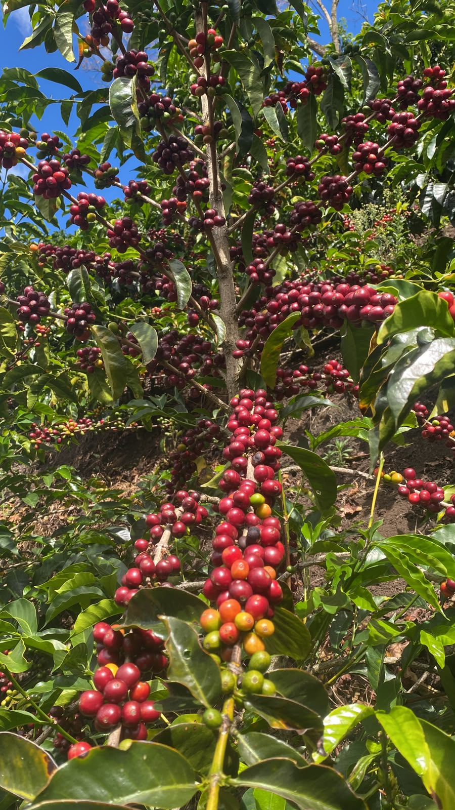
Cerezas en su punto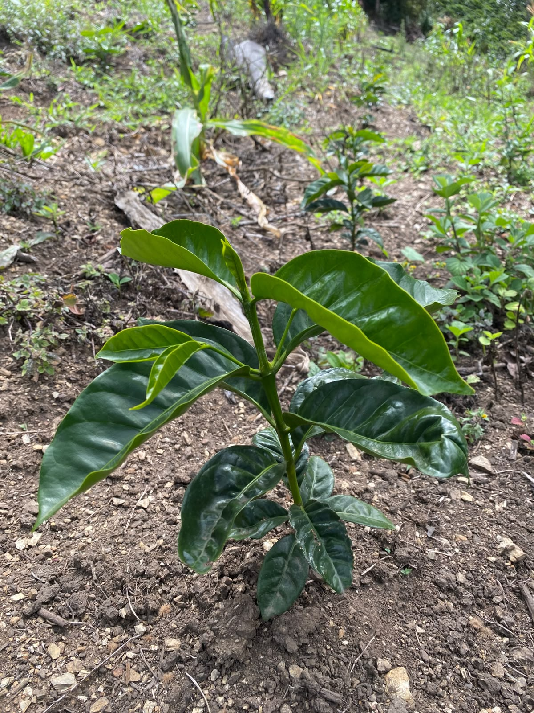
Almácigo joven
Cosecha manual
Grano recién despulpado
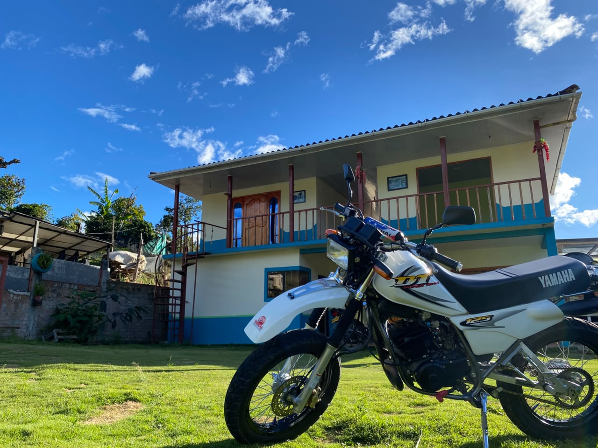
Vida en la finca
Catación y tueste
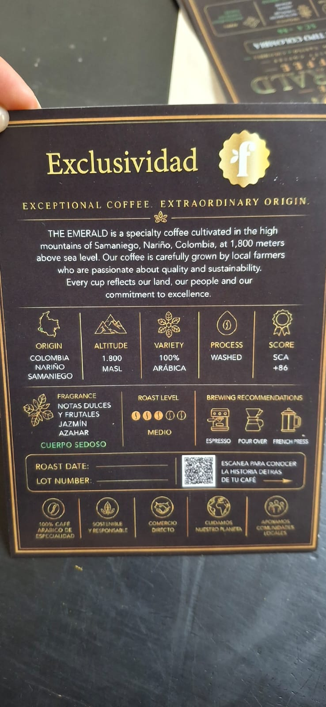
Ficha técnica realPreguntas frecuentes
Para pedidos personales no hay mínimo: puedes empezar desde una bolsa de 250g. Para distribución a cafeterías y negocios, escríbenos por WhatsApp para definir cantidades y precios por volumen.
Sí, hacemos envíos a nivel nacional. El tiempo y el costo se confirman según tu ciudad al momento de hacer el pedido por WhatsApp.
Sí. Si tienes una cafetería o negocio y quieres probar el café antes de un pedido grande, escríbenos y coordinamos el envío de una muestra de degustación.
Trabajamos un tueste medio, pensado para resaltar el perfil achocolatado y las notas dulces y florales de este origen. Funciona bien en espresso, filtrado y prensa francesa.
Sí. Cada empaque incluye un código QR con la fecha de tueste y el número de lote, para que conozcas el origen exacto de tu café.
Dónde nace
El nombre de nuestra marca no es casualidad: nuestro café se cultiva puntualmente en la vereda La Esmeralda, en las montañas altas de Samaniego, a 1.800 msnm. Ahí trabajamos directamente con las familias caficultoras de la zona, lote por lote.
Hablemos
Escríbenos para conocer precios por volumen, muestras de degustación y disponibilidad para distribución.